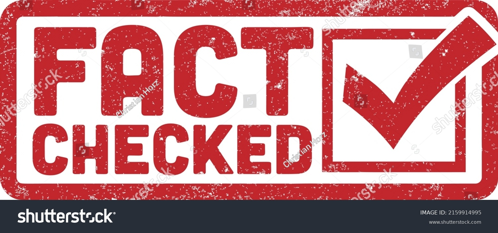
For example: Facebook offers people to report fake accounts and fake news to avoid the spread of misleading content
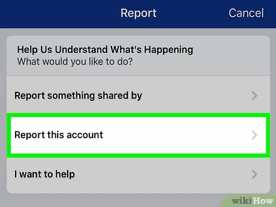 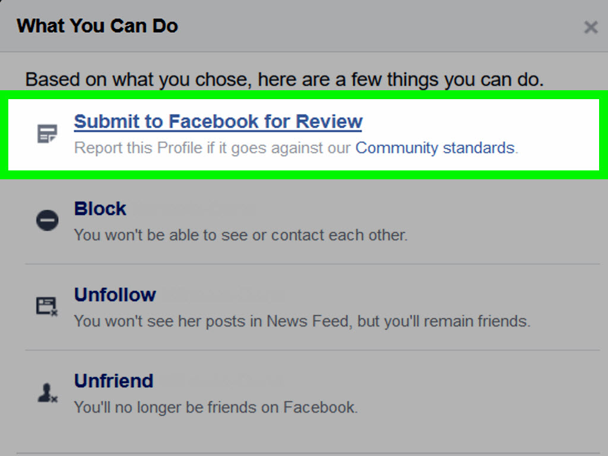For example:
1.Libel and defamation
2.False description of goods
3.False advertising
4.Access to computer with criminal or dishonest intent
| Country | Example |
|---|---|
| Singapore | The law applies to individuals and non-individuals who knowingly communicate with falsehoods; make bots to spread falsehoods; provide services with the purpose of spreading the falsehoods. Singapore POFMA |
| Malaysia | The law applies to any individuals, corporations and internet platforms to publish the fake news content. Malaysia Office Portal of Ministry of Communications and Digital |
| Germany | The law applies to network operators. Germany NetzDG |
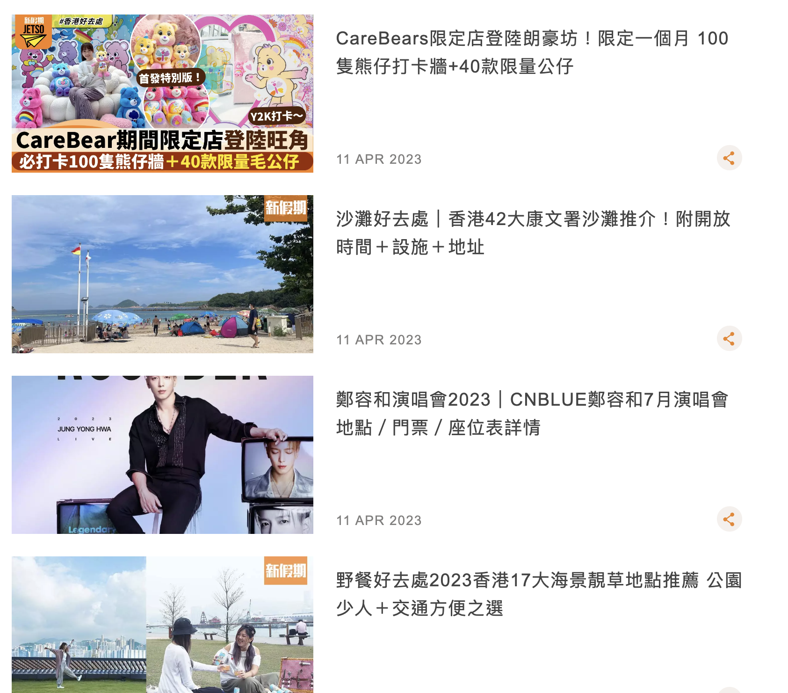
Many ads? Short pieces? Links to other sites?
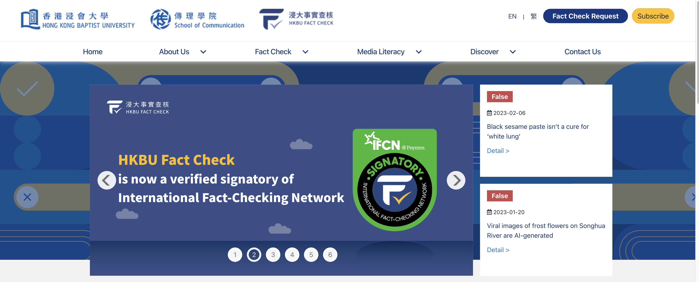
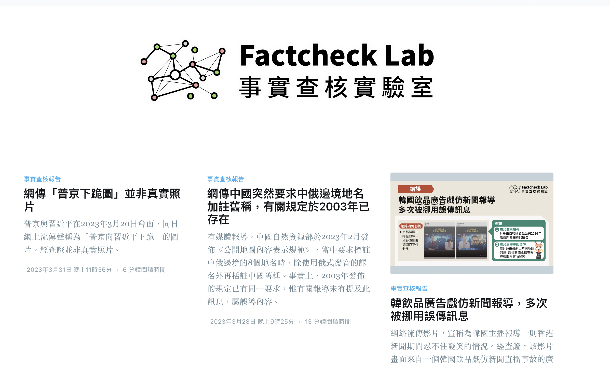
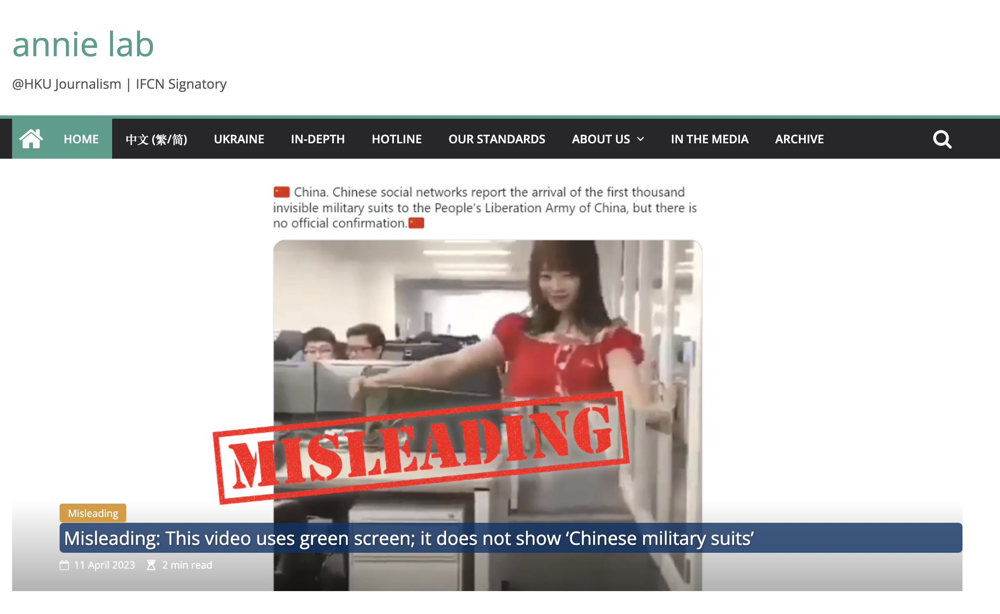
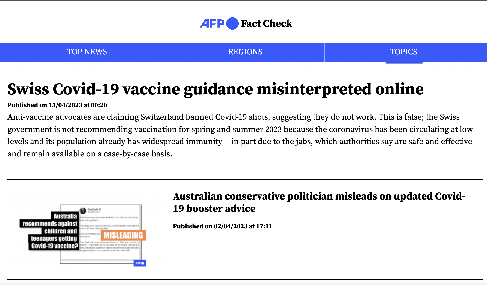
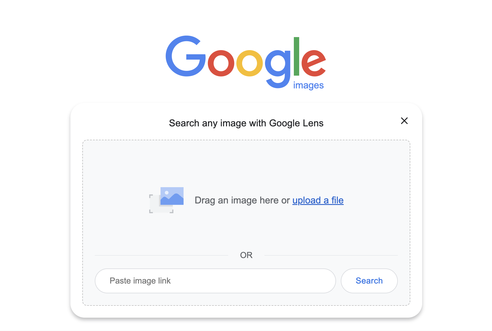
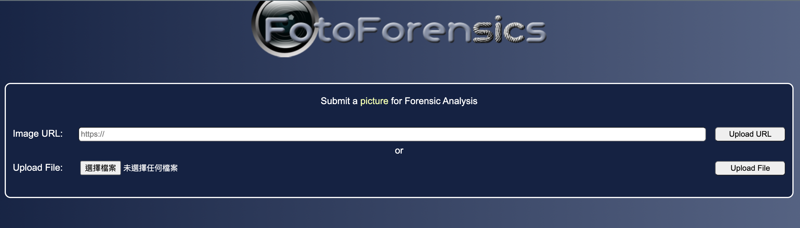
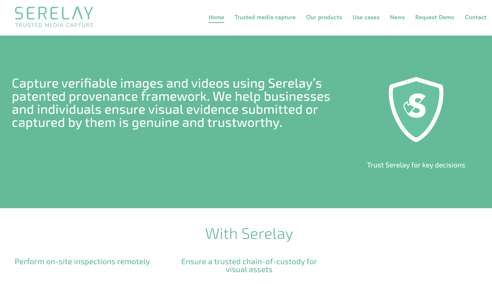